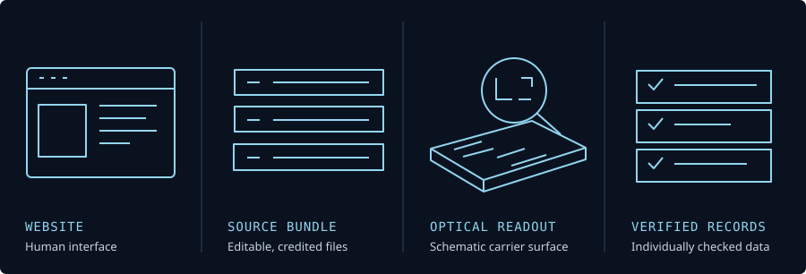

Archive discovery and readout
If someone finds
the spacecraft.
A recipient may first encounter an unpowered object. A repeated mark might invite closer inspection. The archive would need to teach how to find, measure and verify smaller marks before any picture or written record could be read.
Physical concept. Spacecraft geometry, mounting, material and access remain unconfirmed.
Four views of one archive

- Modern website
- Navigation, annotated figures, photographs and simulations for contemporary readers.
- Development package
- Editable source records, provenance, JSON, photographs and a manifest for Earth-side tools.
- Hypothetical physical readout
- A passive reference surface with repeated witness marks. Seek the same local geometry at smaller pitches and compare candidate directions and mark polarity.
- Reconstructed records
- Complete bit sequences with verified framing. Decoding their bytes and understanding the intended content are separate tasks.
Start with evidence, then build meaning
- Discovery and orientation. Match two unequal patterns across the marker and first reading surface. Use the repeated targets to reject rotations or mirror hypotheses.
- Mathematics and physical foundations. Compare quantities and measurements. Infer how sequences of two distinguishable marks map to raster cells before reading longer frames.
- Visual vocabulary and language. Compare paired pictures and candidate glyphs. Contrast distinct examples and keep the last image for an interpretation test.
- Essential encyclopedia. Read foundational scientific and cultural records with their prerequisites, images and references. The target is 100–300 curated articles.
- Expanded encyclopedia. Extend the curated collection to a target of 1,000–5,000 records when budget and review permit.
- Optional reference corpus. A separately packaged Wikipedia-derived collection with explicit provenance and offline attribution.
Later layers depend on earlier ones. A recipient should still be able to begin if the expanded collection or optional corpus is missing.
Text-free C2 specimenAnnotated C2 specimenMagnification and alignment studyVisual vocabulary


Read a damaged specimen
This software experiment begins with sampled bits. Each square in the map represents one protected slot. A reader searches for either of two synchronization witnesses, tries eight possible bit phases and accepts a block only after correction and integrity checks.
Loading the fixed-seed study.
See the separate geometry study for a sampled scratch across a modeled surface.
These plots show sampled slot locations and verified results. Deleting bits shifts later marks in the readout. The simulation supplies explicit damage patterns and cannot establish a storage medium's performance.
Logical specimenProtected specimenLogical record formatPhysical recovery specification